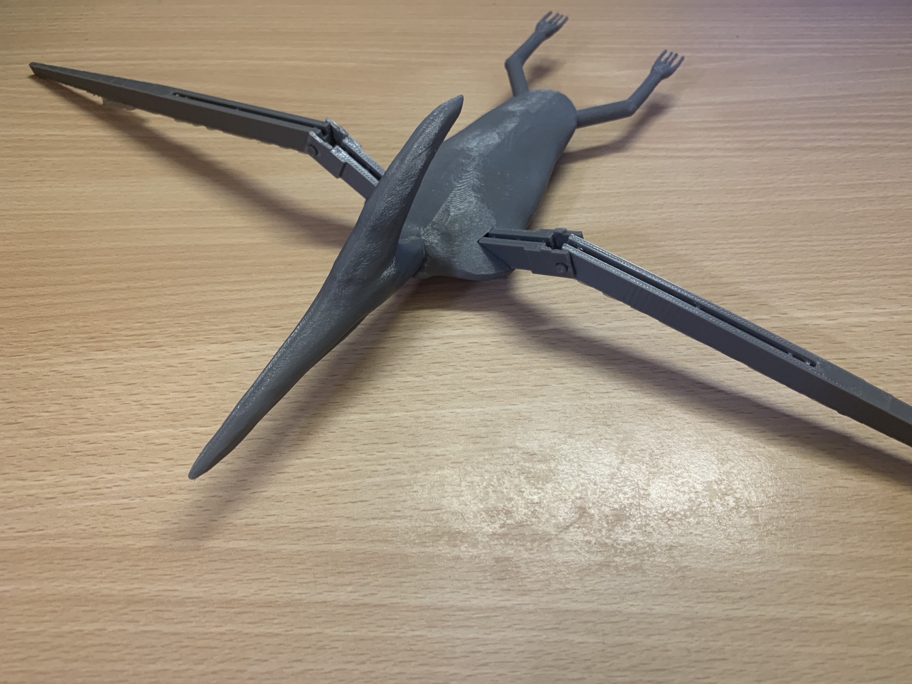

First-Class graduate in AI & Robotics
who likes building things end-to-end, not just prototyping them.
I graduated from the University of Staffordshire in 2026 with a First-Class BSc (Hons) in AI & Robotics. My work spans deep learning research, computer vision, and fully automated software pipelines — grounded in a hands-on robotics and product-design foundation.
Below are three projects that show that range.
What I actually work with.
I'm most interested in the space where a model or an idea has to survive contact with reality — noisy data, an evaluation methodology that can lie to you, a pipeline that has to run unattended every day without someone babysitting it. My dissertation and the automated YouTube pipeline below are both examples of that: getting something to actually work reliably, not just work once in a notebook.
Dissertation
My First-Class dissertation: a multi-label deep learning pipeline for detecting brain haemorrhage types from CT scans — and the data-leakage bug that made the first results look too good to be true.
YouTube Auto-Pipeline
An end-to-end pipeline that writes, illustrates, narrates, assembles and uploads cinematic sci-fi videos on a daily schedule — with almost no manual input. 10k+ views so far.
Pterodactyl
A group robotics project: an animatronic pterodactyl prototype, taken from 2D concept through virtual prototyping to a working 3D-printed articulating model.
A closer look

ICH Detection Results
Per-class AUC after correcting a slice-leakage bug that had inflated the model's reported accuracy.

Towards Terra
A house visual style reached after seven rounds of iteration, generated by a fully local image-gen pipeline.

Pterodactyl Prototype
The finished 3D-printed model, wings articulated by a ligament-inspired pulley system.